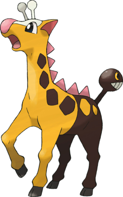

Qulbutoke
Qulbutoké (anglais : Wobbuffet ; japonais : ソーナンス Sonans) est un Pokémon de base de type Psy de la deuxième génération
| Nom pokemon | Numéro pokemon | Description pokemon | Image pokemon | Qulbutoke |
N°202 | Qulbutoké (anglais : Wobbuffet ; japonais : ソーナンス Sonans) est un Pokémon de base de type Psy de la deuxième génération |
|---|---|---|---|
Girafarig |
N°203 | anglais : Girafarig ; japonais : キリンリキ Kirinriki) est un Pokémon de base de type Normal et Psy apparu dans la deuxième génération n'ayant à ce jour ni évolution ni préévolution |  |
Pomdepik |
N°204 | Pomdepik (anglais : Pineco ; japonais : クヌギダマ Kunugidama) est un Pokémon de base de type Insecte de la deuxième génération. Il évolue en Foretress. |  |
Foretress |
N°205 | Foretress (anglais : Forretress ; japonais : フォレトス Foretos) est un Pokémon de type Insecte et Acier de la deuxième génération et l'évolution de Pomdepik. |  |
Insolourdo |
N°206 | Insolourdo (anglais : Dunsparce ; japonais : ノコッチ Nokocchi) est un Pokémon de type Normal apparu dans la deuxième génération. Il est un des Pokémon phares de Pokémon Donjon Mystère : les portes de l'Infini. |  |
Scorplane |
N°207 | Scorplane (anglais : Gligar ; japonais : グライガー Gliger) est un Pokémon de type Sol et Vol de la deuxième génération. |  |